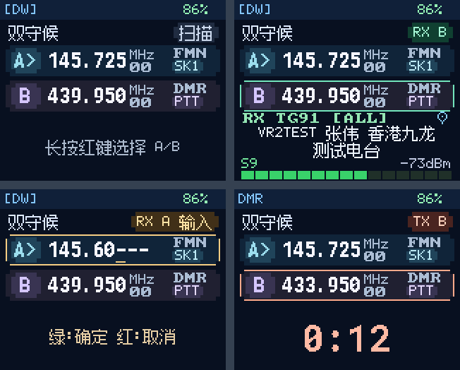
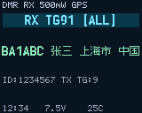

C4FM DN
主屏收发、异频热点、房间查询与 GPS 位置。发射支持随板型而定。
v1.2.0-rc.17 多机型公测
从 FM／DMR 双守候到 C4FM DN、APRS 位置和瀑布频扫。先看固件界面示例，再按你的板型选包。
社区免费公测

点击界面图可查看原图。
主屏收发、异频热点、房间查询与 GPS 位置。发射支持随板型而定。

切换 ALL 和指定 TG 守听。来话主屏显示实际发来的组号。

收包显示对方坐标。有本机定位时还可查看距离和方向。

浏览频段上信号随时间的变化，再把接收频点移到感兴趣的位置。

中文菜单和名称编辑。首次安装需写入字库与拼音资源。
先备份码表、校准和需要保留的记录，并保存能恢复开机的旧固件。DIGIALL 由桌面 OpenGD77 CPS 写入，上游原版可使用其支持的 Web CPS。
开始刷机核对机背完整型号、5W／10W 和板型。双段 MD-UV380／390 的包只适用于带 UV 的机型。
下载对应 ZIP 后，可在电脑上解压，或在下方校验并提取 BIN。ZIP 不能交给 CPS 直接刷写；DIGIALL 完整安装要依次使用三份 BIN。
SHA-256
这里选择 ZIP 仅用于本机校验与解压，不会写入电台。刷机时请选提取后的 BIN。
选好机型后，这里会显示对应的升级按键。
浏览器 USB 检测为可选。使用电脑 Chrome 或 Edge，先关闭 CPS、其他刷机工具和已连接电台的浏览器标签页。
Windows 下先关闭占用 USB 的程序，拔插数据线后重新进入 DFU，再试一次。仍被拒绝时，按以下步骤检查驱动。
USB\VID_0483&PID_DF11。0483:DF11 的 DFU 设备，目标选 WinUSB。拔插并重新进 DFU 后再检测。已有 WinUSB 时优先排查占用。选择机型后，这里会给出对应的刷写入口和顺序。
松开侧键重新开机。核对固件版本、背光和按键，再检查 FM 和 DMR。安装了中文资源的 DIGIALL 可在名称编辑页用 SK2＋# 检查拼音候选。
先报开机、背光与按键，再验 FM／DMR，最后按机型测试 C4FM、APRS 和中文输入。只填写实际做过的项目。